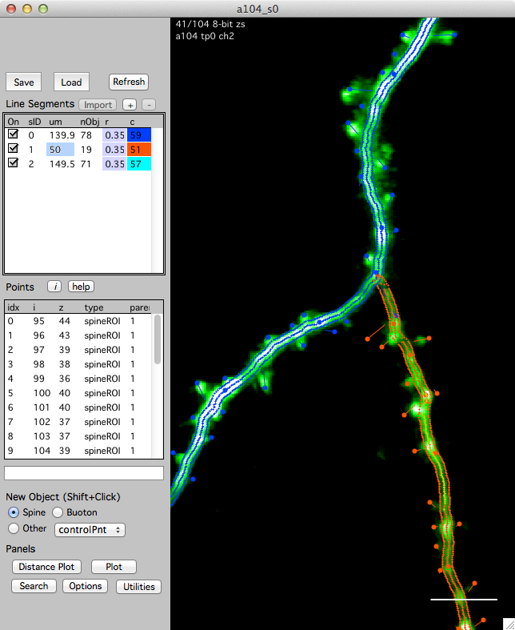

Annotating a stack

Stacks are annotated with 3D objects and line segments. Taken together, these line segments and 3D objects make a stack database (stack db).
This example shows a stack window and its stack db with three line segments and a number of 3D objects, spines in this case.
Open the stack db interface from any stack window using keyboard '['
Creating a 3D object
Choose the type of object in the 'New Object' group and shift+click in the image to create the object.
Each object has a type:
 - Spine
- Spine
- Bouton
- Other
- Spine
- Bouton
- vBranch
- soma
- peri
- control
- other
All object types are 3D points. The different names allow you to organize your annotations into different groups.
These groups can then be searched, plotted and connect together in a map.
Spine and Boutons are special because they associate with a line segment.
Selecting an object
- Single-click on the object
Moving an object
- Select the object (single click), right-click and select 'Move'. Your next click will be the new 3D position of the object. You are given feedback in the bottom of the stack window. Press 'esc' to cancel a move.
Deleting an object
- Select the object (single click), right-click and select 'Delete'.
- Select the object (single-click) and hit the 'del' key.
Creating a line segment
Line segments are created in three steps:
Create a new (empty) line segment
Click '+' button in the 'Line Segment' group. This will create an empty line segment.Make a series of control point objects along your dendrite/axon
- Select 'New Object -> Other -> Control Point'
- Shift-click in the image to create a control point.
- Continue making control points along the desired line segment in the image.
- Select 'New Object -> Other -> Control Point'
Fit the line in FIJI and import the resulting line segment back into map manager
- Right-click on the line segment (in the list) and select 'Make From Control Points - FIJI'. This will open the xxx plugin in FIJI, fit a line to your control points and open the fitted line segment in the map manager stack window.